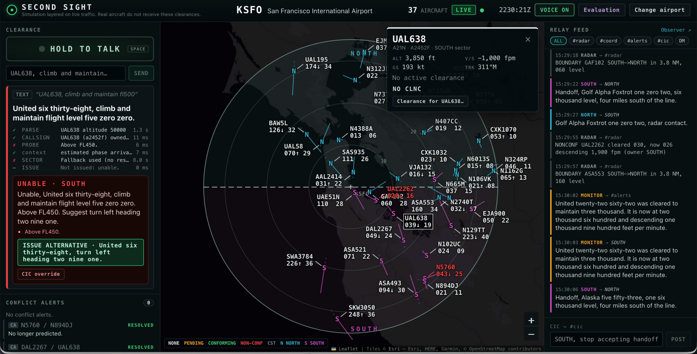

<section id="demo-bad" data-transition="fade" style="background:#0B1622;color:#F3F1EA;font-family:'IBM Plex Sans', Arial, sans-serif;padding:56px 96px;display:flex;flex-direction:column;gap:20px">
<div style="display:flex;align-items:center;gap:20px">
<p style="font-family:'JetBrains Mono', 'Courier New', monospace;font-size:24px;font-weight:600;letter-spacing:3px;color:#0B1622;background:#FF6B6B;border-radius:999px;padding:6px 20px">DEMO · UNABLE</p>
<h2 style="font-family:'Space Grotesk', Arial, sans-serif;font-size:48px;font-weight:700;line-height:1.1">“United six thirty-eight, climb and maintain flight level five zero zero.”</h2>
</div>

<aside>A bad clearance. I ask United six thirty-eight to climb to flight level five zero zero. The probe catches it: above FL450. SOUTH replies “Unable” with the reason and a safer alternative I can issue in one click. The human stays in charge and can still override.</aside>
</section>
